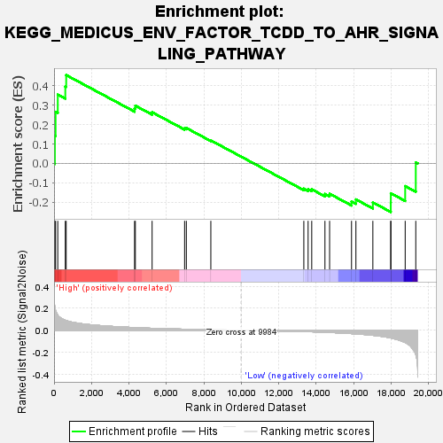
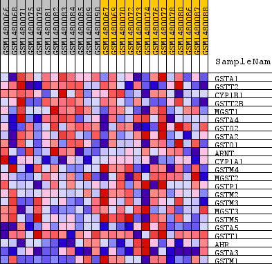
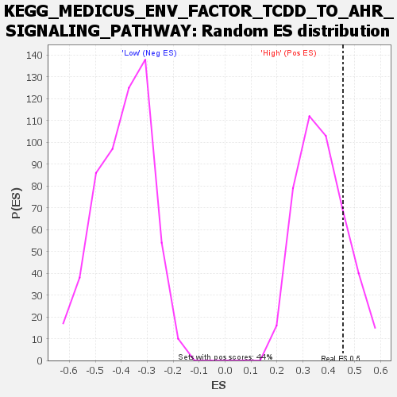

| Dataset | WG6v3.CPT1A.cls#High_versus_Low.CPT1A.cls#High_versus_Low_repos |
| Phenotype | CPT1A.cls#High_versus_Low_repos |
| Upregulated in class | High |
| GeneSet | KEGG_MEDICUS_ENV_FACTOR_TCDD_TO_AHR_SIGNALING_PATHWAY |
| Enrichment Score (ES) | 0.454387 |
| Normalized Enrichment Score (NES) | 1.2269456 |
| Nominal p-value | 0.20229885 |
| FDR q-value | 1.0 |
| FWER p-Value | 1.0 |

| SYMBOL | TITLE | RANK IN GENE LIST | RANK METRIC SCORE | RUNNING ES | CORE ENRICHMENT | |
|---|---|---|---|---|---|---|
| 1 | GSTA1 | GSTA1 | 44 | 0.211 | 0.1427 | Yes |
| 2 | GSTT2 | GSTT2 | 82 | 0.181 | 0.2655 | Yes |
| 3 | CYP1B1 | CYP1B1 | 199 | 0.138 | 0.3540 | Yes |
| 4 | GSTT2B | GSTT2B | 601 | 0.091 | 0.3961 | Yes |
| 5 | MGST1 | MGST1 | 649 | 0.088 | 0.4544 | Yes |
| 6 | GSTA4 | GSTA4 | 4300 | 0.024 | 0.2829 | No |
| 7 | GSTO2 | GSTO2 | 4342 | 0.024 | 0.2971 | No |
| 8 | GSTA2 | GSTA2 | 5237 | 0.018 | 0.2633 | No |
| 9 | GSTO1 | GSTO1 | 6972 | 0.010 | 0.1806 | No |
| 10 | ARNT | ARNT | 7065 | 0.009 | 0.1823 | No |
| 11 | CYP1A1 | CYP1A1 | 8373 | 0.005 | 0.1183 | No |
| 12 | GSTM4 | GSTM4 | 13339 | -0.012 | -0.1296 | No |
| 13 | MGST2 | MGST2 | 13568 | -0.013 | -0.1326 | No |
| 14 | GSTP1 | GSTP1 | 13761 | -0.014 | -0.1330 | No |
| 15 | GSTM2 | GSTM2 | 14467 | -0.018 | -0.1568 | No |
| 16 | GSTM3 | GSTM3 | 14716 | -0.020 | -0.1560 | No |
| 17 | MGST3 | MGST3 | 15887 | -0.030 | -0.1955 | No |
| 18 | GSTM5 | GSTM5 | 16121 | -0.033 | -0.1850 | No |
| 19 | GSTA5 | GSTA5 | 17026 | -0.045 | -0.2003 | No |
| 20 | GSTT1 | GSTT1 | 17983 | -0.070 | -0.2015 | No |
| 21 | AHR | AHR | 17986 | -0.070 | -0.1535 | No |
| 22 | GSTA3 | GSTA3 | 18752 | -0.111 | -0.1166 | No |
| 23 | GSTM1 | GSTM1 | 19318 | -0.220 | 0.0054 | No |

